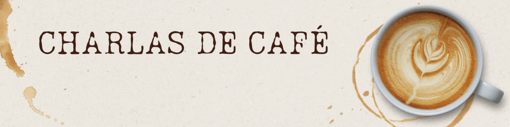

☕ Charlas de café: Los límites de la automatización en la ciencia

Recientemente, participé en un taller sobre el uso de inteligencia artificial en investigación científica, dictado por académicos de distintas áreas del conocimiento de mi universidad. Durante la jornada nos compartieron sus experiencias con el uso de modelos del lenguaje y otras herramientas destinadas a mejorar nuestras capacidades en la elaboración de proyectos de investigación, revisión bibliográfica, escritura de artículos científicos, entre otros temas afines. El taller me hizo reflexionar sobre la automatización en la ciencia y me llevó a elaborar ideas sobre una posible demarcación de cuándo debería considerarse adecuado automatizar.
Aunque me considero un fiel seguidor de los avances en tecnologías que colaboran al desarrollo de nuevos sistemas de automatización, me gustaría clarificar un asunto: la automatización, vista como cualquier otra herramienta, no es buena o mala per se. Desde sus inicios, la automatización se ha justificado principalmente por sus beneficios económicos al aumentar la productividad en un campo de aplicación. Posteriormente, también se comenzó a considerar los impactos ambientales al evaluar la implementación de sistemas automáticos. Sin embargo, con la aparición de nuevas herramientas de inteligencia artificial (IA), surgen aspectos que antes se pasaban por alto, y que en este escrito intentaré retratar.
Desde una perspectiva humana, la automatización resulta beneficiosa al liberar a las personas de tareas que no les brindan valor, como aquellas que son repetitivas o peligrosas, aunque a menudo necesarias. Sin embargo, cuando automatizamos decisiones importantes o procesos de investigación en su totalidad, cedemos nuestra voluntad a herramientas no conscientes. Actividades que nos definen como personas, desarrollan como investigadores, y que si no las hacemos podríamos retroceder en nuestras capacidades y, con el tiempo, no solo afectar nuestro intelecto, sino también limitar las posibilidades de descubrir aquello que se encuentra más allá de lo que pueden vislumbrar estas herramientas. En este tipo de tareas, creo que automatizar no es adecuado.
Años atrás, los límites de la automatización eran más claros, generalmente asociados a las restricciones tecnológicas y a la pérdida de flexibilidad de los procesos. En un sistema creado por humanos, las personas somos la parte más flexible del sistema, debido a que podemos adaptarnos ante cualquier cambio y responder a él. No obstante, esto podría dejar de ser así.
Con las herramientas de IA actuales, es posible automatizar hasta cierto grado un sinnúmero de procesos, muchos de los cuales aún no se han alcanzado a implementar, y no me cabe la menor duda de que en los próximos años será posible automatizar procesos de investigación en su totalidad, es decir, que logren extender la frontera del conocimiento por sí mismos. Desde el punto de vista de la productividad, hemos sido testigos de los beneficios de usar modelos del lenguaje y otras herramientas de IA a corto plazo, pero surge la interrogante de si serán beneficiosos a largo plazo. ¿Qué pasará una vez que los sesgos de estas herramientas traspasen la barrera digital y nuestra sociedad se haya acostumbrado demasiado a su uso, de modo que no se pueda avanzar más allá de los límites existentes de estos modelos?
La pregunta que debemos hacernos ahora es si queremos traspasar aquellas actividades relevantes para nosotros a sistemas automáticos, o si los usaremos solamente para tareas superficiales, manteniendo nuestro rol activo en cada etapa del proceso investigativo. Si automatizamos solo por automatizar, a lo más nos convertiremos en meros revisores de los resultados generados por los modelos, únicamente para aumentar el número de publicaciones que, dicho sea de paso, nadie va a leer más allá que otros modelos del lenguaje.
Me preocupa que este escenario parece ser inevitable a largo plazo y, a quienes nos gusta la ciencia, pasaremos a ser pequeños artesanos en una sociedad altamente automatizada. Espero estar equivocado.
Le saluda respetuosamente,
—Fabián Iglesias
Temuco, Chile.
Agradezco al Prof. Eduardo Diez por sus invaluables comentarios al primer borrador de esta entrada.
Publicado en agosto de 2024 | Actualizado en agosto de 2024